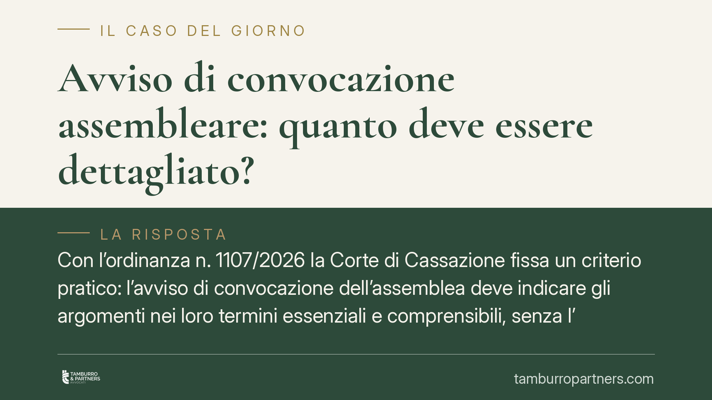

Avviso di convocazione assembleare: quanto deve essere dettagliato?
Con l'ordinanza n. 1107/2026 la Corte di Cassazione fissa un criterio pratico: l'avviso di convocazione dell'assemblea deve indicare gli argomenti nei loro termini essenziali e comprensibili, senza l'obbligo di riportare importi dei preventivi o il dettaglio delle singole lavorazioni. Un chiarimento che incide direttamente sulla validità delle delibere e sulle contestazioni dei condomini dissenzienti.

Il caso e la decisione
Una condomina aveva impugnato la delibera assembleare lamentando che l'avviso di convocazione non specificava gli importi dei preventivi né il dettaglio delle lavorazioni approvate. La tesi: senza quelle informazioni i condomini non potevano formarsi un'opinione consapevole prima dell'assemblea.
La Corte di Cassazione, con l'ordinanza n. 1107/2026, ha respinto questa impostazione. L'avviso deve consentire ai convocati di comprendere di cosa si discuterà, ma non deve anticipare il contenuto della discussione né trasformarsi in una relazione tecnica preventiva.
Inquadramento normativo
La disciplina della convocazione è contenuta nell'art. 66 disp. att. c.c. La norma richiede che l'avviso contenga "specifica indicazione dell'ordine del giorno": una formula volutamente elastica, che non impone un livello di dettaglio predeterminato.
Secondo la Cassazione, l'ordine del giorno deve indicare gli argomenti nei loro termini essenziali e comprensibili. In altre parole, il condomino deve poter capire quale materia sarà oggetto di decisione e deve essere messo in condizione di decidere se partecipare, informarsi o farsi assistere.
Il punto centrale dell'ordinanza riguarda il momento della valutazione. L'adeguatezza dell'avviso va giudicata a priori, cioè sulla base di ciò che l'avviso comunicava prima dell'assemblea, e non alla luce di quanto effettivamente deliberato. Non si può dichiarare invalido un avviso perché, a posteriori, l'assemblea ha affrontato aspetti che il condomino avrebbe voluto conoscere prima.
Cosa cambia in concreto
Per l'amministratore la decisione è un punto di equilibrio. Non è necessario allegare preventivi, computi metrici o importi di spesa all'avviso di convocazione. È sufficiente che la voce dell'ordine del giorno sia chiara: ad esempio "approvazione lavori di rifacimento della facciata" è un'indicazione idonea, anche senza cifre.
Resta però il confine da non superare. Una formula generica o fuorviante — "varie ed eventuali" utilizzata per far passare decisioni di spesa, oppure una dicitura che non lascia intuire la reale portata dell'argomento — espone comunque la delibera al rischio di annullamento.
Per il condomino cambia la prospettiva dell'impugnazione. Non basta dolersi di non aver ricevuto numeri o dettagli tecnici: occorre dimostrare che l'avviso era così lacunoso da impedire la comprensione dell'argomento stesso. È un onere più stringente.
Va ricordato che la delibera adottata in difetto di una valida convocazione è annullabile, non nulla. Ciò significa che l'impugnazione va proposta nel termine di trenta giorni previsto dall'art. 1137 c.c., termine che decorre dalla comunicazione del verbale per gli assenti e dalla data dell'assemblea per i dissenzienti presenti.
Il valore della chiarezza preventiva
L'ordinanza non riduce la tutela dei condomini: sposta il baricentro sulla comprensibilità piuttosto che sulla completezza documentale. Un avviso chiaro, che descrive l'argomento in modo riconoscibile, assolve la propria funzione. Il luogo per discutere importi, preventivi e alternative tecniche resta l'assemblea.
Per gli amministratori consigliamo comunque, in un'ottica di buona gestione, di mettere a disposizione dei condomini i preventivi prima della riunione, anche se non obbligatorio. È una prassi che riduce il contenzioso e favorisce decisioni più consapevoli, pur non essendo condizione di validità.
Cosa fare in concreto
- Formulate l'ordine del giorno in modo specifico e comprensibile: ogni voce deve far capire quale materia sarà decisa, evitando dizioni generiche per deliberazioni di spesa.
- Non confidate nelle "varie ed eventuali": non possono ospitare decisioni che impegnano economicamente il condominio.
- Conservate la prova dell'invio dell'avviso nelle forme dell'art. 66 (raccomandata, PEC, fax o consegna a mani) e nel termine di cinque giorni prima della riunione.
- Valutate l'impugnazione entro trenta giorni: se ritenete l'avviso realmente lacunoso, attivatevi subito perché il termine è perentorio.
- Fate verificare l'avviso e il verbale a un professionista prima di agire, per distinguere un difetto reale da una contestazione infondata.
Ogni condominio ha una storia a sé.
Se gestisci un'amministrazione e vuoi un confronto su una specifica questione condominiale, scrivi allo studio. Ti rispondiamo entro un giorno lavorativo.